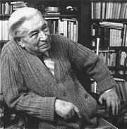
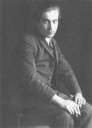
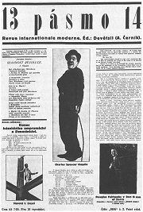
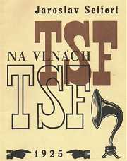
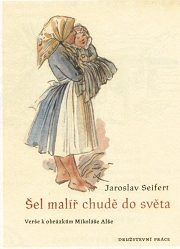
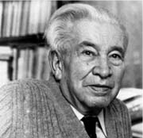

Jaroslav Seifert
|
JAROSLAV SEIFERT
* 23. 9. 1901 (Praha-Žižkov)
† 10. 1. 1986 (Praha)
Jaroslav Seifert získal jako první èeský spisovatel Nobelovu cenu za literaturu. Psal pøedevším lyrickou poezii. Jako èlen Devìtsilu prošel etapou proletáøské poezie i poetismu. Pozdìji se vydal vlastní umìleckou cestou. Vìnoval se hlavnì milostné lyrice. Také se obrátil k tradièním hodnotám jako rodina nebo vlast. V reflexivní lyrice se s nostalgií obrací do doby svého mládí a vìnuje se údìlu spisovatele.
Seifert vyrùstal jako jeden z mála autorù proletáøské poezie v chudé dìlnické rodinì, která bydlela na Žižkovì. Prázdniny trávil v Kralupech nad Vltavou u dìdeèka z maminèiny strany . Gymnázium nedokonèil a živil se jako levicový novináø. Tìžce nesl období okupace. Jeho pozdní tvorbu poznamenala vážná choroba pohybového ústrojí. V 50. a 70. letech navíc nemohl doma oficiálnì publikovat.
|

Jaroslav Seifert
|
Seifert a Devìtsil
Seifert byl zakládajícím èlenem Devìtsilu a v první etapì proletáøské poezie jedním z jeho hlavních mluvèích. Redigoval Revoluèní sborník Devìtsil a devìtsilské èasopisy Disk a Pásmo.
Co Seifertovi zaèalo vadit na vlastní básni Slavný den?
|
Seifert a proletáøská poezie
První dvì Seifertovy sbírky Mìsto v slzách a Samá láska vznikaly v duchu proletáøské poezie, ale najdeme v nich i milostné verše. Mnohem pozdìji popsal Seifert v knize vzpomínek Všecky krásy svìta tyto umìlecké zaèátky. Na první pokusy ve stylu proletáøské poezie se už dívá s úsmìvným nadhledem. Jeho pøístup dobøe vystihuje naivitu a idealismus mladých èlenù Devìtsilu.
|

Devìtsilský èasopis Pásmo
|
Seifert komunista
Seifert vstoupil do KSÈ ihned po jejím vzniku, ale roku 1929 byl spoleènì s dalšími šesti spisovateli ze strany vylouèen, protože podepsal prohlášení Spisovatelé komunisté komunistickým dìlníkùm, ve kterém se kritizovalo nové gottwaldovské vedení. Zároveò byl vyhozen z Komunistického nakladatelství a knihkupectví, kde pracoval jako redaktor.

Báseò ze sbírky Na vlnách TSF
|
Seifert a poetismus
Seifertovì básnické sbírce Na vlnách TSF dodala na jedineènosti originální Teigova typografická úprava. Kniha pozdìji vyšla i v tradièní podobì pod názvem Svatební cesta. Dalšími poetistickými sbírkami Jaroslava Seiferta jsou Slavík zpívá špatnì a Poštovní holub.

|

Teigova obálka Seifertovy sbírky Na vlnách TSF
Co znamená zkratka TSF?
Najdi v ukázkách konkrétní rysy poetismu.
Jak se ti líbí Teigova grafická úprava Seifertových básní?
Jde ještì o básnì? Proè?
|
Seifert a 30. léta
Ve 30. letech Seifert opouští avantgardní pozice. Po zániku Devìtsilu se nepøidává k surrealistùm a za uzavøený považuje i poetismus. Pracuje v sociálnìdemokratických novinách.
|
Seifert a 30. léta
Seifertovou doménou byla milostná lyrika – Jablko z klína, Ruce Venušiny. Hlavním tématem sbírky Jaro, sbohem jsou nostalgické vzpomínky na dìtství. Seifert opouští volný verš a píše tradièní básnì s pravidelnými rýmy i strofami.
|
Srovnej Seifertovy verše z 20. a 30. let.
|
Seifert a 40. léta
V dobì okupace pracoval Seifert v nakladatelství Družstevní práce a deníku Národní práce jako redaktor. 8. kvìtna 1945 byl zatèen nacistickými vojáky a mìl být popraven. Na poslední chvíli naštìstí došlo k jeho výmìnì za nìmecká rukojmí.
|
Jaroslav Seifert: Pøilba hlíny
Tradièní formu mají i Seifertovy básnì, které reagují na okleštìní Èeskoslovenska v záøí 1938, následnou nìmeckou okupaci a ohrožení existence èeského národa. Básník vìnuje své verše velkým osobnostem èeských dìjin, pøedevším Boženì Nìmcové, a píše vlastenecké básnì plné jinotajù –
Vìjíø Boženy Nìmcové, Svìtlem odìná, Kamenný most, Pøilba hlíny (Zhasnìte svìtla).
|
Najdeš v ukázkách alegorické motivy?
|
Seifert a 50. léta
Roku 1949 odešel Seifert do invalidního dùchodu. Jeho knihu Píseò o Viktorce odsoudila socialistická kritika, protože byla v dobì budovatelské poezie pøíliš pesimistická. Básník se na tøi roky odmlèel a publikovat zaèal až po Stalinovì smrti. Roku 1953 podepsal spoleènì s dalšími 41 spisovateli žádost o milost pro vìznìného básníka Josefa Palivce adresovanou prezidentu republiky. Povìstná byla jeho kritická øeè na sjezdu Svazu èeskoslovenských spisovatelù v roce 1956.
|
Seifert a 50. léta
Jednotlivé básnì sbírky Šel malíø chudì do svìta vznikaly podle ilustrací Mikoláše Alše. Sbírka Chlapec a hvìzdy zase vychází z kreseb Josefa Lady. Vrcholem této etapy Seifertovy tvorby je sbírka Maminka.
|

Napiš báseò o své mamince nebo tatínkovi.
Líbí se ti Alšovy a Ladovy obrázky? Proè?
|
Seifert a 60. léta
Na pøelomu 50. a 60. let se Seifert znovu odmlèel, protože vážnì onemocnìl a musel podstoupit složitou operaci páteøe. Roku 1968 byl zvolen pøedsedou rehabilitaèní komise Svazu èeskoslovenských spisovatelù a o rok pozdìji byl zvolen pøedsedou novì založeného Svazu èeských spisovatelù, který ale vzápìtí rozpustili komunistiètí normalizátoøi.
|
Seifert a 60. léta
Na sklonku 60. let Seifert vydává sbírky Koncert na ostrovì, Halleyova kometa a Odlévání zvonù. Hlavními tématy tìchto knih jsou láska, nostalgické vzpomínání na mládí a problematika umìlecké tvorby. Seifert opouští písòovou formu básní a vrací se k volnému verši.
|
Srovnej Seifertovu poezii ze 40. a 60. let.
|
Seifert a normalizace
Seifert odmítl pøijmout okupaci Èeskoslovenska vojsky Varšavské smlouvy a dostal se do nemilosti normalizaèního režimu. Navíc podepsal Chartu 77. V 70. letech mohly oficiálnì vyjít pouze nìkteré starší básnì, jinak publikoval v exilových nakladatelstvích a samizdatu. Knihy, které vyšly v 80. letech, byly znaènì cenzurovány.
|
Seifert a normalizace
Seifertova sbírka Morový sloup byla již pøipravena k vydání, ale kvùli nástupu normalizace se její vytištìní neustále odkládalo. Kniha se dostala ke ètenáøùm pouze v samizdatové podobì a jako exilový tisk. Po dlouhé odmlce mohl vyjít Deštník z Piccadilly a poslední autorova sbírka Býti básníkem. Pro tyto knihy je typický volný verš, nostalgické vzpomínky na milostná dobrodružství, pøátele a generaèní souputníky (vìtšinou již mrtvé) nebo reflexe spisovatelské profese. Ožívají v nich také zážitky z války.
|
Srovnej Seifertovy básnì z doby normalizace a 50. let.
|
Nobelova cena za literaturu
Seifert se stal roku 1984 laureátem Nobelovy ceny za literaturu. V oficiálním zdùvodnìní stojí, že ji obdržel za „poezii, která svìží smyslovostí a mimoøádnou vynalézavostí podává osvobozující obraz lidské nezdolnosti a mnohotvárnosti“, ale urèitì rozhodovaly i jeho obèanské postoje. Nemocný Seifert si cenu nemohl osobnì vyzvednout, a proto na slavnostní pøedání do Stockholmu odjely jeho dìti. Domácí tisk tuto významnou událost zmínil pouze okrajovì, pøestože byl Seifert teprve druhým Èechem a prvním spisovatelem, který Nobelovu cenu získal.
|
Jaroslav Seifert: Všecky krásy svìta
Seifertova kniha Všecky krásy svìta vznikala v období nostalgického vzpomínání a rekapitulování vlastního života. Pøestože jde o prozaický text, Seifert se nevyhnul silné lyriènosti, která je typická pro celé jeho dílo.
Oficiální vydání vzpomínek Všecky krásy svìta bylo cenzurováno, napøíklad vyškrtáním všech zmínek o Teigovi.
|
Všecky krásy svìta
Název Seifertovy knihy vzpomínek Všecky krásy svìta vychází ze závìru Teigova èlánku Umìní dnes a zítra, ve kterém se píše „KRÁSA nového umìní je z tohoto svìta. Úkolem umìní [...] je vytváøeti analogické krásy a vyzpívati závratnými obrazy a netušenými rytmy básní VŠECKY KRÁSY SVÌTA.". Seifert v knize oznaèil svou generaci za generaci Teigovu.
Který èeský spisovatel by si podle tebe zasloužil udìlení Nobelovy ceny za literaturu? Proè?
Které laureáty Nobelovy ceny znáš?
|
Internetové stránky
Seifert: Samá láska
Seifert: Na vlnách TSF
Seifert, ukázky
Tipy
Seifertovy Kralupy, literární soutìž
Nobelova cena za literaturu, laureáti
|
Doporuèená èetba
Dílo Jaroslava Seiferta (7 svazkù)
Dílo Jaroslava Seiferta (16 svazkù), Akropolis
Janouch, František: Šel básník chudì do svìta
Pešat, Zdenìk: Jaroslav Seifert, Praha 1991
Píseò písní, pøel. Seifert, Segert, Odeon, Praha 1969
Seifert, Jaroslav: Jablko z klína, Ruce Venušiny, Jaro, sbohem, Èeskoslovenský spisovatel, Praha 1990
Seifert, J.: Koncert na ostrovì, Halleyova kometa, Odlévání zvonù, Èeskoslovenský spisovatel, Praha 1986
Seifert, J.: Mìsto v slzách, Samá láska, Svatební cesta, Slavík zpívá špatnì, Poštovní holub, Èeskoslovenský spisovatel, Praha 1989
Seifert, J.: Tøeba vám nesu rùže, Mladá fronta, Praha 1999
Seifert, J.: Vìjíø Boženy Nìmcové, Pøilba hlíny, Ruka a plamen, Píseò o Viktorce, Èeskoslovenský spisovatel, Praha 1987
Seifert, J.: Všecky krásy svìta, Èeskoslovenský spisovatel, Praha 1992
Stich, Alexandr: Seifertova Svìtlem odìná, Argo, Praha 1998
|
Vypracuj písemný referát o nìkteré z uvedených knih.

Jaroslav Seifert
|